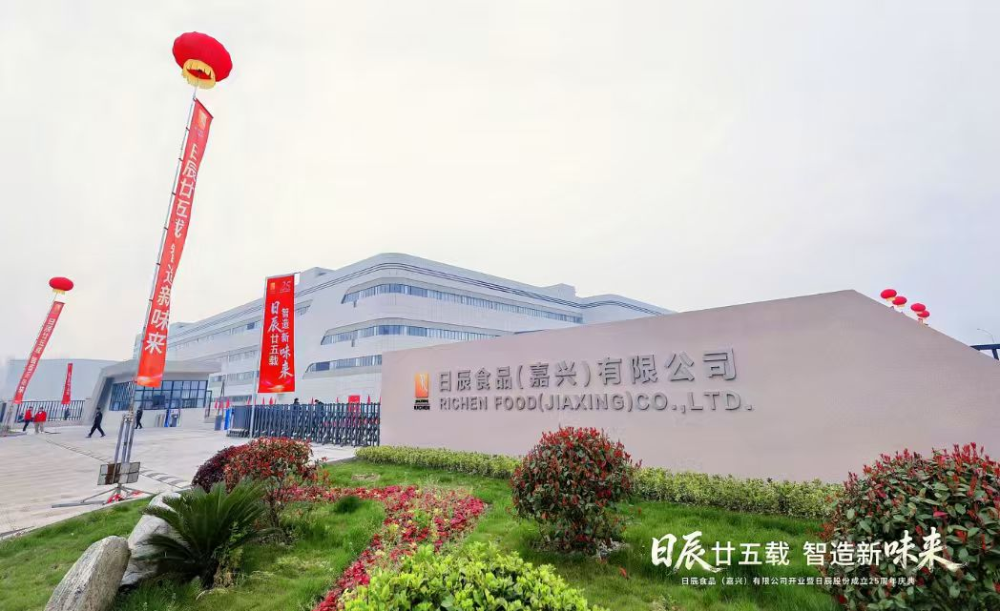

【上市公司背景】青岛日辰食品股份有限公司成立于 2001 年，于上海证券交易所主板上市（证券代码 603755），注册资本对应总股本约 1 亿股，2024 年员工总数约 490 人。2004 年公司一次性投入在青岛市即墨环保产业园兴建占地 66000 平方米的日辰食品工业园，2006 年正式投产，至今仍是公司核心生产基地。
【业务结构】日辰股份业务以复合调味料为核心，已初步建立以食品加工、连锁餐饮为主的 ToB 业务渠道，以及以零售、电商等终端为主的 ToC 业务渠道，形成 ToB + ToC、线上 + 线下全渠道布局。下游客户包括食品加工企业、连锁餐饮品牌、商超及电商平台，跨渠道、跨客户类型带来的协同复杂度，对组织能力提出较高要求。
【服务方式】华认联国际项目组以"渠道经理胜任力"为切入点，与 ToB 销售、ToC 电商、KA 客户管理三支团队分别做能力盘点与流程梳理，输出一套覆盖客户分级、方案设计、价格管控、订单履约的《渠道经理一日工作流》，并以"标杆渠道经理工作坊"的形式把工具落到日常动作中。
【价值落地】项目交付后，公司在 ToB 客户分级管理、ToC 电商运营节奏、跨渠道产品组合策略上逐步形成更稳定的运营机制；与华认联国际也以本次合作为起点，在上市公司治理与组织能力建设方向建立长期沟通。
← 返回客户案例